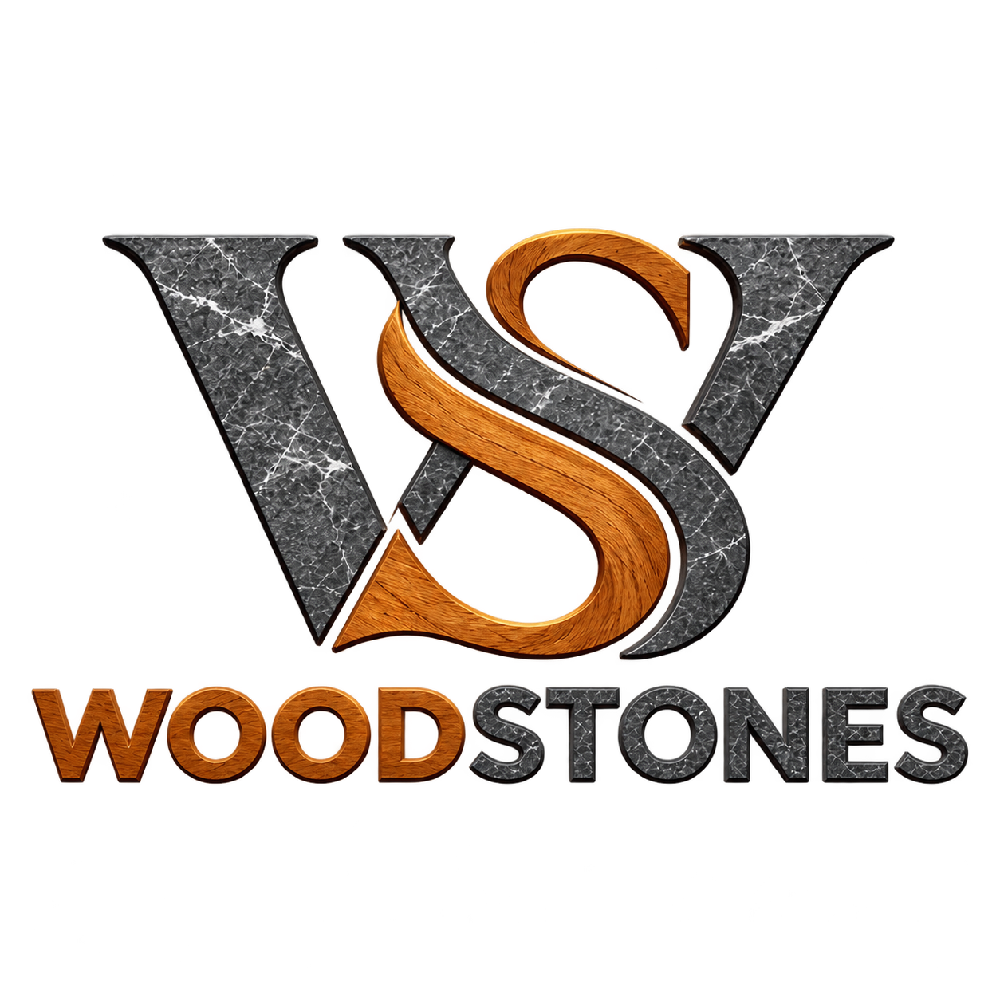
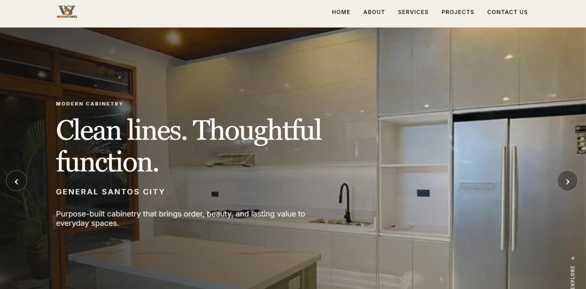
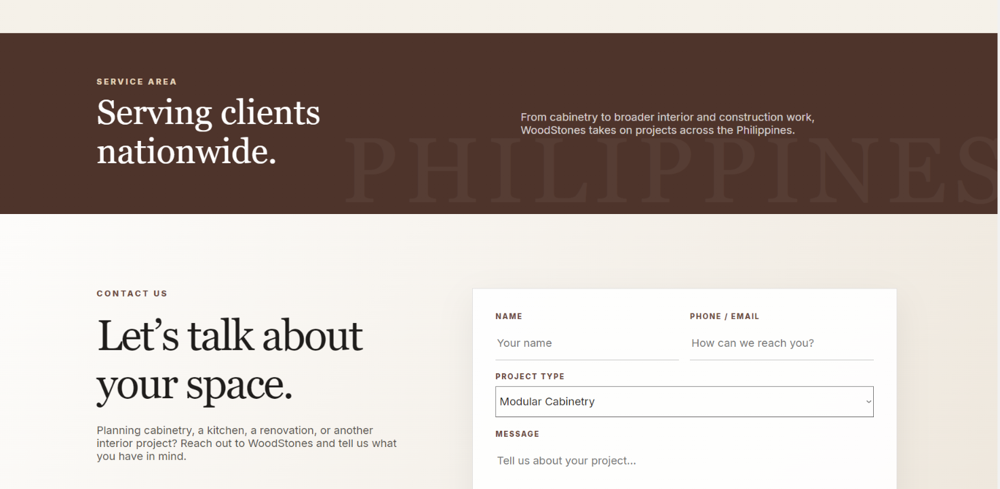
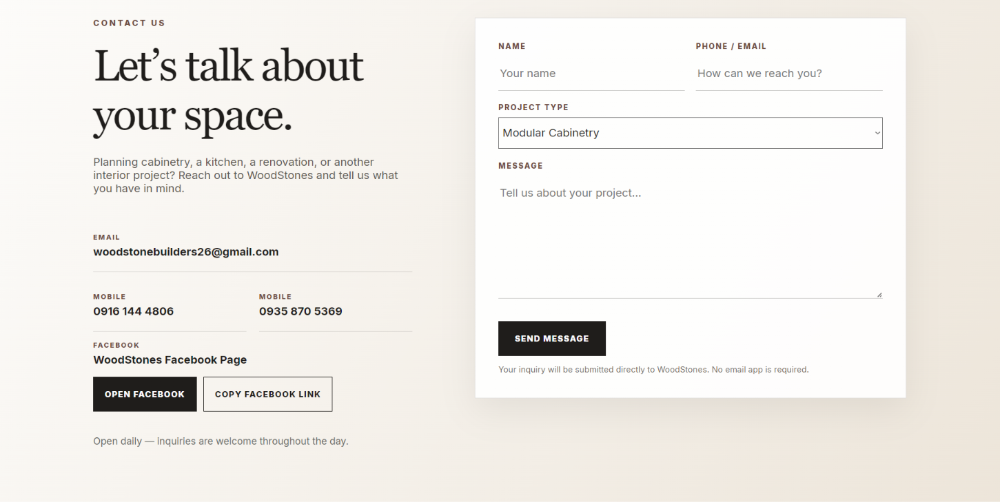
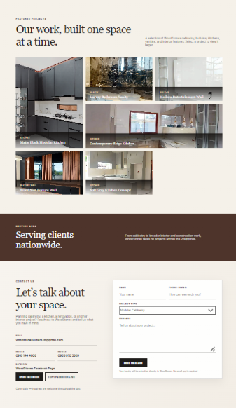

FAMILY BUSINESS / DIGITAL PRESENCE
WOODSTONES
WEB DESIGN / CONTENT STRUCTURE / COPY REFINEMENT / DIGITAL EXPERIENCE
A digital home for a modular cabinetry and interior-solutions business, built around clarity, craftsmanship, and easier client inquiries.

- CLIENT
- WoodStones
- SERVICE
- Nationwide
- YEAR
- 2026
- LOCATION
- Philippines

01 / THE PROJECT
BUILDING A
DIGITAL HOME.
WoodStones is a furniture and interior-solutions business established in 2020, specializing in modular cabinetry, kitchen islands, countertops, and custom interior work.
The website needed to present the business professionally while still feeling warm and connected to the spaces WoodStones creates.
CLARITY / CRAFT / FUNCTION
02 / THE CHALLENGE
MORE THAN JUST
A GALLERY.
The challenge was to organize several parts of the business into one clear experience: services, completed projects, company information, nationwide coverage, and a simple way for potential clients to make an inquiry.
03 / PROCESS
STRUCTURE FIRST.
DESIGN SECOND.
I started by identifying the information a potential client would actually need and organizing it into a simple website structure.
From there, I developed a visual direction centered around warm interior imagery, clean typography, spacious layouts, and straightforward navigation.


04 / WEBSITE SHOWCASE
THE FINAL
EXPERIENCE.

HOMEPAGE / CONTACT / INQUIRY — CLEAN LINES. THOUGHTFUL FUNCTION.
EXPLORE THE LIVE WEBSITE ↗MY ROLE
WEB DESIGN / DIGITAL PRESENCE — 2026